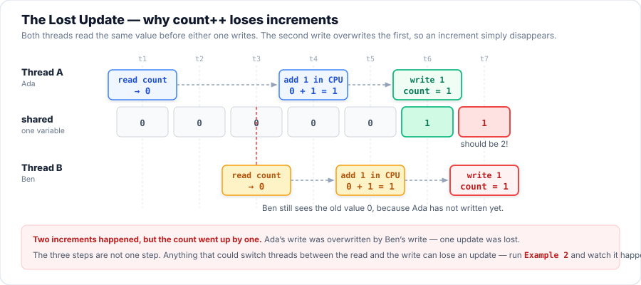
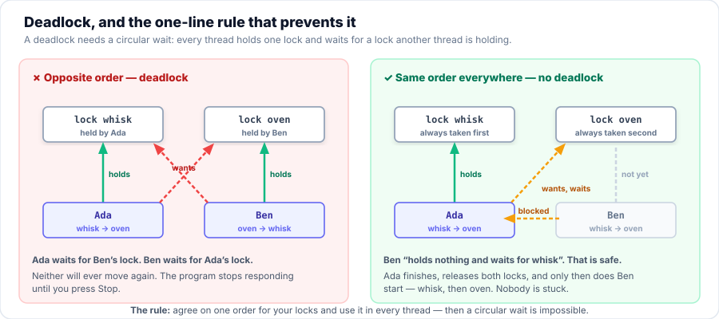

Session 5 — Multithreading & Concurrency
In Session 4 we hired more chefs. Today they all reach for the same mixing bowl.
When two threads change the same data at the same moment, the answer comes out wrong — and it is wrong
only some of the time, which is what makes it the hardest bug in programming. Today you learn to
share data safely: locks, atomic access, coordination, deadlock avoidance, and the
java.util.concurrent toolbox that does most of this work for you.
- Define multithreading, and use
isAlive()andjoin()to check on a thread and wait for it. - Identify a race condition, and explain why
count++is three steps rather than one. - Use the intrinsic lock —
synchronizedmethods and blocks — to make a critical section safe. - Apply atomic access (
AtomicInteger,LongAdder) where one variable needs protecting. - Coordinate threads with
wait(),notify()andnotifyAll(), always inside awhileloop. - Explain deadlock and avoid it with one agreed lock order.
- Apply the
java.util.concurrentcollections (ConcurrentHashMap,BlockingQueue,CopyOnWriteArrayList). - Use modern concurrency: thread pools, virtual threads, and
CompletableFuture. - Describe AI-driven detection of thread blocking in virtual threads, and check an AI's diagnosis against the evidence.
Your Roadmap for Today
isAlive(), join()
Race conditions
The intrinsic lock
Atomic access
wait() and notify()
Deadlocks
Concurrent collections
Pools & virtual threads
AI blocking detection
code/s05-multithreading in IntelliJ. The examples are in src/main/java/com/aptech/s05. You need JDK 21 or newer (Part 8 uses virtual threads; Part 9 uses JDK 24+ behaviour).
Why This Matters
If threads never share anything, multithreading is easy. But real programs must share: a web server's threads share a connection pool, a game's workers share the player's position, a shop's checkout threads share the stock count. When two threads change the same data at the same moment, they can overwrite each other's work and corrupt it. This is the hardest kind of bug to fix because it does not fail every time — it passes your tests, then breaks in front of a customer.
You and your partner share an account with ₦100 in it.
- You go to an ATM, check the balance (₦100), and decide to take out ₦50.
- At the exact same moment, your partner goes to another ATM, checks the balance (₦100), and takes out ₦50.
- Each machine works out ₦100 − ₦50 = ₦50 and saves that as the new balance.
- The account now says ₦50, but ₦100 has walked out of the door. The bank just lost ₦50.
That is a race condition. Neither machine did anything silly — they simply both read before either wrote. The fix is for one customer at a time to lock the account until their transaction is completely finished.
Part 1 — Multithreading, isAlive() and join()
Multithreading is one program doing several jobs at the same time. Each job runs on its own thread: a single path of execution through your code. In Session 4 you learned to create those threads; today you learn what happens when they touch the same data. First, two methods you will use in every concurrent program:
isAlive()— asks "is this thread still running?" It returnstruefrom the momentstart()is called until the thread finishes, thenfalseforever.join()— tells the current thread to "wait right here until that thread has finished." Without it you may read a result before it has been written — or print a report before the work is done.
Example 1 — one chef, then three chefs
The same three dishes are cooked twice: first by a single thread, one dish after another, then by three threads at the same time.
The clock shows the difference, and isAlive()/join() let main watch and wait.
package com.aptech.s05;
/**
* Multithreading is one program doing several jobs at the same time.
* The two methods you need first are isAlive() and join().
*
* One chef cooks one dish after another (single-threaded), then three chefs
* cook at the same time (multithreaded) - and the clock proves the difference.
*/
public class E01_Multithreading {
/** The JOB one chef does: plate a dish in a number of steps. */
static class Cook implements Runnable {
private final String dish;
private final int steps;
Cook(String dish, int steps) {
this.dish = dish;
this.steps = steps;
}
@Override
public void run() {
for (int i = 1; i <= steps; i++) {
sleep(200);
System.out.println(" " + Thread.currentThread().getName()
+ " -> " + dish + " step " + i + "/" + steps);
}
}
}
public static void main(String[] args) throws InterruptedException {
System.out.println("A) ONE chef, one dish after another (this is a single thread):");
long start = System.currentTimeMillis();
new Cook("Jollof rice", 3).run(); // run() = this thread does the work now
new Cook("Puff-puff", 2).run(); // and only then the next dish starts
long oneChef = System.currentTimeMillis() - start;
System.out.println(" Took " + oneChef + " ms. The two jobs never overlapped.\n");
System.out.println("B) THREE chefs at the same time (this is multithreading):");
Thread ada = new Thread(new Cook("Jollof rice", 3), "Chef Ada");
Thread ben = new Thread(new Cook("Pepper soup", 3), "Chef Ben");
Thread chi = new Thread(new Cook("Puff-puff", 3), "Chef Chi");
start = System.currentTimeMillis();
ada.start(); // start() = "begin this job on a NEW thread"
ben.start();
chi.start();
// isAlive() asks: is this thread still running?
System.out.println(" Just after start(): ada.isAlive() = " + ada.isAlive());
ada.join(); // join() = "wait here until Ada has finished"
System.out.println(" After ada.join(): ada.isAlive() = " + ada.isAlive());
ben.join();
chi.join();
long threeChefs = System.currentTimeMillis() - start;
System.out.println(" Took " + threeChefs + " ms for the same 9 steps.");
System.out.printf(" Doing it one after another would take about %d ms (%.1fx slower).%n",
9 * 200, (9 * 200) / (double) threeChefs);
}
static void sleep(long ms) {
try {
Thread.sleep(ms);
} catch (InterruptedException e) {
Thread.currentThread().interrupt(); // never swallow an interrupt
}
}
}| Line | What it does, in plain English |
|---|---|
| 35 | new Cook("Jollof rice", 3).run() — calling run() directly means this thread does the work, right now. No new thread is created, so the next dish cannot start until this one is finished. |
| 46 | ada.start() — this is what creates the new thread. Ada begins working while main carries straight on to the next line. |
| 51 | ada.isAlive() — asked straight after start(), the answer is true: Ada is running somewhere. |
| 53 | ada.join() — main stops here until Ada's run() returns. Only then does the next line run — which is why the second isAlive() prints false. |
Real output of one run. The millisecond figures depend on your computer; the relationship between them is what matters:
Part 2 — Race Conditions
A race condition is a bug where the timing of two threads corrupts shared data. The word "race" is exact: the threads are racing to read and write the same value, and whoever wins changes the answer.
Example 2 — the broken tally
Eight chefs each add 100,000 orders to the same tally. The answer must be 800,000 — every single time. Nothing here is protected, so it never is.
package com.aptech.s05;
import java.util.concurrent.CountDownLatch;
/**
* A race condition you can see with your own eyes.
*
* Eight chefs each add 100,000 orders to the SAME tally. The answer should be
* 800,000 every single time. It never is - and the wrong number is different on
* every run.
*
* WHY THE THREE STEPS ARE WRITTEN OUT
* -----------------------------------
* Real code says count++ and looks like one step. It is really three:
*
* int current = count; // 1. READ the shared value into the processor
* current = current + 1; // 2. ADD one
* count = current; // 3. WRITE it back to memory
*
* Below, those three steps are spelled out, with a tiny pause in the middle.
* The pause is NOT a fix and NOT something you need in real code: it only holds
* the window between READ and WRITE open long enough for you to watch another
* chef walk in and overwrite the value. Without it the processor is so quick
* that the three steps look like one - and a hot JIT-compiled loop can hide the
* problem completely, which is exactly why this bug reaches production.
*
* The CountDownLatch is only a starting gate: it makes all eight chefs begin at
* the same instant so they really do collide. (We meet the rest of
* java.util.concurrent in Part 7.)
*/
public class E02_RaceCondition {
/** A shared tally. Nothing here protects it. */
static class Tally {
int count = 0;
void addOne() {
int current = count; // READ - every chef may read the same value
Thread.yield(); // (demonstration aid: hold the window open)
count = current + 1; // WRITE - and now they overwrite each other
}
}
static final int CHEFS = 8;
static final int ORDERS_EACH = 100_000;
public static void main(String[] args) throws InterruptedException {
Tally tally = new Tally();
CountDownLatch startGate = new CountDownLatch(1);
Runnable job = () -> {
try {
startGate.await(); // stand still until the starting signal
} catch (InterruptedException e) {
Thread.currentThread().interrupt();
return;
}
for (int i = 0; i < ORDERS_EACH; i++) {
tally.addOne();
}
};
Thread[] chefs = new Thread[CHEFS];
for (int i = 0; i < CHEFS; i++) {
chefs[i] = new Thread(job, "Chef " + (char) ('A' + i));
chefs[i].start();
}
startGate.countDown(); // GO! all eight run at the same moment
for (Thread chef : chefs) {
chef.join(); // wait for every chef to finish
}
int expected = CHEFS * ORDERS_EACH;
int lost = expected - tally.count;
System.out.println(CHEFS + " chefs x " + String.format("%,d", ORDERS_EACH) + " orders each");
System.out.println("Expected: " + String.format("%,d", expected));
System.out.println("Actual: " + String.format("%,d", tally.count));
System.out.println("Lost updates: " + String.format("%,d", lost));
System.out.println();
System.out.println("Same code. Same " + String.format("%,d", expected) + " orders. A different answer.");
System.out.println("A race condition does not fail every time; it fails SOME time.");
System.out.println("That is why it survives testing and then breaks in front of a customer.");
}
}Real output of one run — then run it again, and again:
Why? Because count++ only looks like one step. For the processor it is three:
- READ the current value of
countinto the processor. - ADD one to it.
- WRITE the new value back to memory.
If Chef Ada and Chef Ben both READ 0 before either WRITEs, they both compute 1, and both write 1.
Two increments happened; the tally went up by one. That lost increment is called a lost update.

0 at t3 — a value that is already out of date by the time he writes it. Two increments, count only goes up by one.Thread.yield() in the example
In E02 the three steps are written out with Thread.yield() between READ and WRITE. That yield is a demonstration aid, not a fix, and not something you need in real code.
It only holds the window between the read and the write open long enough for you to watch another chef walk in and overwrite the value.
Without it, the processor is so quick that the three steps look like one — and a hot, JIT-compiled loop can hide the problem completely.
That is exactly why this bug reaches production: your test run of a simple count++ loop may print the correct answer every time, and the bug is still real.
Never rely on seeing it to believe it.
💻 Try it: the Lost Update Lab
Now you are the scheduler. Two threads, one shared count, three increments each — so the answer must be 6.
Step the threads yourself and try to lose an increment; then switch the counter to synchronized, then to AtomicInteger, and try again.
count++ is a READ, an ADD and a WRITE; if two threads interleave those three steps, one WRITE overwrites the other. Nothing crashed, and the total is simply wrong.Part 3 — The Intrinsic Lock and synchronized
To fix a race condition we must make the critical section — the few lines that touch the shared data — run for one thread at a time.
The tool is a lock. In Java every object carries one built-in lock, called its intrinsic lock or monitor, and
synchronized is how you use it: "before a thread may enter this section, it must hold this object's lock; if another thread holds it, wait outside."
Example 3 — three safe ways to write the same counter
The same 20,000 increments, reached three ways. All three are correct; they differ in what gets locked.
package com.aptech.s05;
import java.util.function.Consumer;
/**
* The cure for the race condition: the intrinsic lock.
*
* Every Java object has a built-in lock. synchronized says "only one thread
* at a time may hold this object's lock", which makes the READ-ADD-WRITE
* of count++ happen as one whole step again.
*
* The same 20,000 is reached three ways below.
*/
public class E03_Synchronized {
static class Tally {
int count = 0;
private final Object lock = new Object(); // our own private lock object
// 1. synchronized on the method: locks the object you called it on (this)
synchronized void addWithMethod() {
count++;
}
// 2. synchronized on a block: lock only the few lines that need it
void addWithBlock() {
synchronized (this) {
count++;
}
}
// 3. synchronized on a private lock object - the style experts recommend,
// because nobody outside this class can accidentally lock it
void addWithLockObject() {
synchronized (lock) {
count++;
}
}
}
public static void main(String[] args) throws InterruptedException {
System.out.println("synchronized method -> " + race(Tally::addWithMethod));
System.out.println("synchronized (this) block -> " + race(Tally::addWithBlock));
System.out.println("private lock object -> " + race(Tally::addWithLockObject));
System.out.println("Expected every time: 20000");
System.out.println();
System.out.println("Same two threads, same 20,000 increments - but now no update is ever lost.");
}
/** Runs the given action 10,000 times on each of two threads and returns the tally. */
static int race(Consumer<Tally> action) throws InterruptedException {
Tally tally = new Tally();
Runnable job = () -> {
for (int i = 0; i < 10_000; i++) {
action.accept(tally);
}
};
Thread ada = new Thread(job, "Chef Ada");
Thread ben = new Thread(job, "Chef Ben");
ada.start();
ben.start();
ada.join();
ben.join();
return tally.count;
}
}| Line | What it does, in plain English |
|---|---|
| 21 | synchronized void addWithMethod() — locks the object the method was called on, i.e. this. Simple, and correct as long as everyone goes through this method. |
| 27 | synchronized (this) { … } — a block. Locks only these few lines instead of the whole method, so unsynchronised work around it can still run in parallel. |
| 35 | synchronized (lock) on a private final Object — the style experts recommend. Nobody outside the class can even see the lock, so no other code can accidentally hold it and block you. |
Real output. Nothing is lost now — and it is exactly 20000 every single time:
Two things at once, and both matter:
- Mutual exclusion — only one thread is inside the block at a time, so the three steps cannot interleave.
- Visibility — when a thread releases a lock, its changes are visible to the next thread that takes it. Without this, another thread might keep reading a stale copy.
And the cost: threads that want in must queue. That is why you lock the smallest piece of code that is actually critical, not the whole method "to be safe".
Lock the right object
A lock only excludes threads that ask for the same lock. Two threads that each lock a different object are not excluded at all — and this mistake is common enough that it has its own entry in Common Mistakes below. Two rules keep you safe:
- Use one lock object for one piece of shared data, and use the same lock in every method that touches it.
- Prefer a
private final Object lock = new Object();overthis, so nothing outside the class can share your lock by accident.
Part 4 — Atomic Access
For a single counter you do not need to write a lock at all. The classes in java.util.concurrent.atomic do the
read–add–write as one indivisible (atomic) step, so no update can be lost. Because you never write
synchronized yourself, there is nothing to get wrong — and they are usually faster than a lock, because a thread that finds
no contention never has to queue.
Example 4 — the same four chefs, and no lost orders
Compare this with Example 2: same four chefs, same 400,000 orders, same shared total — but the total is now exactly right, and there is not one
synchronized keyword in sight.
package com.aptech.s05;
import java.util.concurrent.atomic.AtomicInteger;
import java.util.concurrent.atomic.LongAdder;
import java.util.function.IntSupplier;
/**
* Atomic access: the race condition is gone without writing a single
* synchronized keyword.
*
* An atomic class does its read-modify-write as ONE indivisible step, so no
* update can be lost. LongAdder is the high-throughput version: when many
* threads hammer it, it spreads the work over several cells instead of making
* everyone fight over one value.
*
* Compare this run with E02_RaceCondition - same four chefs, same 400,000 orders.
*/
public class E04_AtomicAccess {
static final int CHEFS = 4;
static final int ORDERS_EACH = 100_000;
public static void main(String[] args) throws InterruptedException {
AtomicInteger counter = new AtomicInteger();
System.out.println("AtomicInteger.incrementAndGet() -> "
+ race(counter::incrementAndGet, counter::get) + " (expected 400000)");
LongAdder adder = new LongAdder();
System.out.println("LongAdder.increment() -> "
+ race(adder::increment, adder::intValue) + " (expected 400000)");
System.out.println();
System.out.println("Use an atomic class when ONE variable is all you are protecting.");
System.out.println("Use synchronized when several variables must change together and");
System.out.println("a half-finished change must never be visible to another thread.");
}
/** Runs addOne on four threads at once and returns the final total. */
static int race(Runnable addOne, IntSupplier total) throws InterruptedException {
Thread[] chefs = new Thread[CHEFS];
for (int i = 0; i < CHEFS; i++) {
chefs[i] = new Thread(() -> {
for (int n = 0; n < ORDERS_EACH; n++) {
addOne.run();
}
}, "Chef " + (char) ('A' + i));
chefs[i].start();
}
for (Thread chef : chefs) {
chef.join();
}
return total.getAsInt();
}
}| Line | What it does, in plain English |
|---|---|
| 25 | AtomicInteger.incrementAndGet() — one indivisible operation. Two threads calling it at the same instant cannot both read the same value; one of them simply goes first. Expected: 400000. |
| 29 | LongAdder.increment() — the high-throughput version. When many threads hammer it, it spreads the work over several internal cells instead of making everyone fight over one value, then adds them up when you ask. Also 400000. |
Real output:
synchronized? Ask how many variables.
- One variable (a counter, a total, a flag) → use an atomic class. Less code, less to get wrong, usually faster.
- Several variables that must change together (a balance and a history list; a position and a status) → use
synchronized, so another thread can never see a half-finished change.
An atomic class protects one variable. It cannot make two separate changes happen as a pair.
Part 5 — wait() and notify()
synchronized stops threads from crashing into each other. But sometimes threads must take turns: a baker cannot bake onto a counter that is still full,
and a customer cannot eat bread that does not exist yet. Each one has to wait for the other to change the world.
Every Java object has three more methods for this conversation, and you may only call them while holding that object's lock — i.e. inside a
synchronized block or method:
wait()— gives the lock back and goes to sleep until another thread signals this object. (Handing the lock back is the crucial part: if it kept the lock, nobody could ever change anything to wake it.)notify()— wakes one thread waiting on this object. Which one is not specified.notifyAll()— wakes all of them. They then compete for the lock again. This is the safer choice, and the one to reach for by default.
Example 5 — a counter that holds one loaf
package com.aptech.s05;
/**
* wait() and notifyAll(): two threads taking turns.
*
* The counter holds at most ONE loaf. The customer cannot eat bread that does
* not exist, and the baker cannot bake onto a counter that is still full - so
* each one waits for the other. wait() gives the lock back and sleeps;
* notifyAll() wakes the other side up.
*/
public class E05_WaitNotify {
/** A kitchen pass that holds at most one loaf. */
static class Bakery {
private String bread = null; // null means the counter is empty
synchronized void bake(String type) throws InterruptedException {
while (bread != null) { // still bread on the counter: we cannot bake
System.out.println(" Baker waits: " + bread + " is still on the counter.");
wait(); // give up the lock and sleep until told otherwise
}
bread = type;
System.out.println(" Baker baked " + type + ".");
notifyAll(); // tell the customer the bread is ready
}
synchronized void eat() throws InterruptedException {
while (bread == null) { // nothing to eat yet
System.out.println(" Customer waits: the counter is empty.");
wait();
}
System.out.println(" Customer ate " + bread + ".");
bread = null;
notifyAll(); // tell the baker the counter is free again
}
}
public static void main(String[] args) throws InterruptedException {
Bakery bakery = new Bakery();
Thread customer = new Thread(() -> {
try {
bakery.eat();
bakery.eat();
} catch (InterruptedException e) {
Thread.currentThread().interrupt();
}
}, "customer");
Thread baker = new Thread(() -> {
try {
bakery.bake("Croissant");
bakery.bake("Baguette");
} catch (InterruptedException e) {
Thread.currentThread().interrupt();
}
}, "baker");
customer.start();
Thread.sleep(50); // let the customer reach wait() first
baker.start();
customer.join();
baker.join();
System.out.println();
System.out.println("Both finished. Neither thread was busy-waiting: while they waited");
System.out.println("they were asleep and used no CPU. The exact order of the lines can");
System.out.println("differ between runs - that is the scheduler choosing, not a bug.");
}
}| Line | What it does, in plain English |
|---|---|
| 18 | while (bread != null) — the condition, checked before waiting. Only wait when the thing you want is genuinely not available yet. |
| 20 | wait() — "the counter is full; I give up the lock and sleep until somebody tells me it changed." |
| 24 | notifyAll() — "I have just changed the counter, so anyone waiting on it should wake up and look again." |
Real output of one run. The order of the lines can differ between runs — that is the scheduler choosing, not a bug:
while, and never if?
When a thread wakes from wait(), the condition may already be false again: another thread can sneak in and take the bread first.
Also, wait() is allowed to wake up on its own — a spurious wake-up. For both reasons you must re-check the condition, and re-checking means a loop.
if (bread == null) wait(); is the classic bug: it checks once and charges ahead on a condition that may no longer hold. Always while.
wait(). What is it doing with the object's lock?wait().Part 6 — Deadlocks, and How to Avoid Them
Locks fix race conditions, but they bring their own danger. A deadlock is two or more threads frozen forever, each holding a lock the other one needs. Nothing is being computed, nothing crashes, and no error is printed: the program simply stops making progress. Worse, each thread is behaving perfectly correctly on its own — the deadlock is in the combination.
Example 6 — a deadlock, caught in the act
Ada takes the pot and then wants the spoon; Ben takes the spoon and then wants the pot. Both are asleep waiting for a lock the other will never release. A watchdog thread notices that nothing is moving, asks the JVM who is stuck, and stops the program so we are not left staring at a frozen window.
package com.aptech.s05;
import java.lang.management.ManagementFactory;
import java.lang.management.ThreadInfo;
import java.lang.management.ThreadMXBean;
/**
* A deadlock, caught in the act.
*
* The JVM itself knows when threads have stopped forever, and this is the same
* report you will see in IntelliJ's console or in a .jfr recording. Here a
* watchdog asks the JVM for the deadlocked threads and then stops the program,
* so we are not left staring at a frozen window.
*/
public class E06_Deadlock {
private static final Object POT = new Object();
private static final Object SPOON = new Object();
public static void main(String[] args) throws InterruptedException {
Thread ada = new Thread(() -> cook("Chef Ada", "pot", POT, "spoon", SPOON), "Chef Ada");
Thread ben = new Thread(() -> cook("Chef Ben", "spoon", SPOON, "pot", POT), "Chef Ben");
// The watchdog. Without it this program would hang forever.
Thread watchdog = new Thread(() -> {
sleep(1500);
ThreadMXBean bean = ManagementFactory.getThreadMXBean();
long[] stuck = bean.findDeadlockedThreads();
if (stuck == null) {
System.out.println("Watchdog: no deadlock found after 1500 ms.");
return;
}
System.out.println();
System.out.println("Watchdog: DEADLOCK DETECTED - " + stuck.length + " threads will never move again:");
for (ThreadInfo info : bean.getThreadInfo(stuck)) {
if (info != null) {
System.out.println(" " + info.getThreadName() + " is " + info.getThreadState()
+ ", waiting for the lock held by " + info.getLockOwnerName());
}
}
System.out.println("The kitchen is frozen; nothing can unlock it from inside.");
System.out.println("The watchdog stops the program instead.");
System.exit(0);
}, "watchdog");
watchdog.setDaemon(true);
ada.start();
ben.start();
watchdog.start();
ada.join(); // these two never return, so only the watchdog can end the run
ben.join();
System.out.println("Both chefs finished - no deadlock this run.");
}
/** Reach for the first utensil, then the second, then cook. */
private static void cook(String chef, String first, Object firstLock,
String second, Object secondLock) {
System.out.println(chef + " picks up the " + first + ".");
synchronized (firstLock) {
sleep(300); // gives the other chef time to pick up the other utensil
System.out.println(chef + " now needs the " + second + " ...");
synchronized (secondLock) {
System.out.println(chef + " is cooking.");
}
}
System.out.println(chef + " puts everything down.");
}
private static void sleep(long ms) {
try {
Thread.sleep(ms);
} catch (InterruptedException e) {
Thread.currentThread().interrupt();
}
}
}Real output. The last two lines are the JVM's own report — the same facts you will see in a thread dump or a Java Flight Recorder file:
| Line | What it does, in plain English |
|---|---|
| 29 | bean.findDeadlockedThreads() — the JVM tracks the wait-for graph, so it can tell you which threads are in a cycle. It returns null when there is no deadlock. |
| 39 | info.getLockOwnerName() — the name of the thread holding the lock this one is waiting for. That single field is what turns "it's hung" into "Ada is waiting for Ben". |
| 47 | watchdog.setDaemon(true) — a daemon thread must be marked before start(). As a daemon it will not itself keep the program alive. |
Example 7 — the same program, one rule added
Nothing about the locking changed. Not a single extra lock, not a longer sleep. The only difference is that both chefs now reach for the pot first, every time.
package com.aptech.s05;
/**
* The same two chefs, the same two utensils, the same locks - and no deadlock.
*
* Nothing about the locking changed except the ORDER: every chef now reaches
* for the pot first. Because a thread can never be holding the spoon and
* waiting for the pot at the same time, the circle that causes a deadlock
* cannot close.
*/
public class E07_DeadlockFixed {
private static final Object POT = new Object();
private static final Object SPOON = new Object();
public static void main(String[] args) throws InterruptedException {
Thread ada = new Thread(() -> cook("Chef Ada"), "Chef Ada");
Thread ben = new Thread(() -> cook("Chef Ben"), "Chef Ben");
ada.start();
ben.start();
ada.join();
ben.join();
System.out.println();
System.out.println("Both chefs finished and the program exited on its own.");
System.out.println("The rule: agree on one order for taking locks, and always follow it.");
}
/** Both chefs use the SAME order: pot first, spoon second. */
private static void cook(String chef) {
System.out.println(chef + " reaches for the pot.");
synchronized (POT) {
System.out.println(chef + ": I have the pot, now I need the spoon.");
sleep(300);
synchronized (SPOON) {
System.out.println(chef + " is cooking.");
}
System.out.println(chef + " puts everything down.");
}
}
private static void sleep(long ms) {
try {
Thread.sleep(ms);
} catch (InterruptedException e) {
Thread.currentThread().interrupt();
}
}
}Real output. The program now finishes and exits by itself:

A deadlock needs a circular wait. So break the circle: agree on one order for taking your locks and follow it in every thread.
- Be consistent. If one method takes
potthenspoon, no method anywhere may takespoonthenpot. - Hold one lock at a time when you can. Locking less cannot deadlock.
- Take the lock, use it, release it. Do not call out to unrelated code — a method that takes a lock you did not know about — while holding a lock.
- Remember the order is a decision your team makes, so write it down where the next person will see it.
Part 7 — The java.util.concurrent Toolbox
Writing synchronized, wait() and notifyAll() by hand is difficult and easy to get wrong — as Parts 3 to 6 have shown.
In modern Java we rarely write it. The classes in java.util.concurrent were written and tested by the people who built the JVM, and they
do the locking, the waiting and the waking for you. Reach for these first; write synchronized by hand only when no class already solves your problem.
Example 8 — three collections that are safe to share
package com.aptech.s05;
import java.util.List;
import java.util.Map;
import java.util.concurrent.ArrayBlockingQueue;
import java.util.concurrent.BlockingQueue;
import java.util.concurrent.ConcurrentHashMap;
import java.util.concurrent.CopyOnWriteArrayList;
/**
* The java.util.concurrent toolbox: thread-safe collections that do the locking
* for you. These are the classes to reach for before writing synchronized
* yourself - they were written and tested by the people who built the JVM.
*/
public class E08_ConcurrentCollections {
public static void main(String[] args) throws Exception {
System.out.println("1. ConcurrentHashMap - four chefs record orders at the same time");
Map<String, Integer> orders = new ConcurrentHashMap<>();
Thread[] chefs = new Thread[4];
for (int i = 0; i < chefs.length; i++) {
String name = "Chef " + (char) ('A' + i);
chefs[i] = new Thread(() -> {
for (int n = 0; n < 1_000; n++) {
orders.merge(name, 1, Integer::sum);
}
}, name);
chefs[i].start();
}
for (Thread chef : chefs) {
chef.join();
}
int total = orders.values().stream().mapToInt(Integer::intValue).sum();
System.out.println(" " + orders);
System.out.println(" total = " + total + " (expected 4000 - not one order lost)");
System.out.println();
System.out.println("2. BlockingQueue - a real kitchen pass that holds at most 2 dishes");
BlockingQueue<String> pass = new ArrayBlockingQueue<>(2);
Thread baker = new Thread(() -> {
try {
for (String dish : List.of("Croissant", "Baguette", "Puff-puff")) {
System.out.println(" baker wants to put " + dish + " on the pass ...");
pass.put(dish); // blocks by itself when the pass is full
System.out.println(" baker put " + dish + " on the pass");
}
pass.put("CLOSED");
} catch (InterruptedException e) {
Thread.currentThread().interrupt();
}
}, "baker");
Thread waiter = new Thread(() -> {
try {
for (String dish = pass.take(); !dish.equals("CLOSED"); dish = pass.take()) {
System.out.println(" waiter served " + dish);
Thread.sleep(40);
}
} catch (InterruptedException e) {
Thread.currentThread().interrupt();
}
}, "waiter");
baker.start();
waiter.start();
baker.join();
waiter.join();
System.out.println(" put() and take() did all the waiting and waking for us - no wait(), no notify().");
System.out.println();
System.out.println("3. CopyOnWriteArrayList - a list read far more often than it is changed");
List<String> guests = new CopyOnWriteArrayList<>(List.of("Ada", "Ben"));
guests.add("Chi");
System.out.println(" guests = " + guests);
System.out.println();
System.out.println("Same jobs as Parts 2 to 4, none of the danger. Reach for java.util.concurrent");
System.out.println("first; write synchronized by hand only when no class already solves it.");
}
}| Line | What it does, in plain English |
|---|---|
| 25 | orders.merge(name, 1, Integer::sum) — an atomic read–modify–write inside the map. Four chefs record 1,000 orders each; the total is 4,000, and not one order is lost. A plain HashMap here would lose counts and can even corrupt its internal structure. |
| 45 | pass.put(dish) on an ArrayBlockingQueue<>(2) — blocks by itself when the queue is full. The baker is parked until a waiter takes something out. No wait(), no notify(). |
| 56 | pass.take() — the other half. Blocks by itself when the queue is empty, and wakes as soon as something arrives. put and take together are the whole producer–consumer pattern. |
Real output:
ConcurrentHashMap— a thread-safeMap. Several threads read and write at once without locking the whole map. The default choice for shared key–value data.BlockingQueue(e.g.ArrayBlockingQueue,LinkedBlockingQueue) — the producer–consumer tool.put()blocks when full,take()blocks when empty.CopyOnWriteArrayList— safe reads with no locking at all, because every change rebuilds the list. Ideal when reads vastly outnumber writes (a list of listeners, a cache of settings).
Contrast with the plain collections: ArrayList, HashMap and StringBuilder are not thread-safe. Sharing one between threads is the bug from Part 2, hiding inside a class.
Part 8 — Recent Concurrency: Pools, Virtual Threads, CompletableFuture
The last piece of the toolbox is about managing threads rather than sharing data between them. Creating a brand-new Thread for every small job costs
time and memory, and an unmanaged thread is easy to leak. Modern Java gives you three better answers.
Example 9 — a pool, virtual threads, and a promise
package com.aptech.s05;
import java.util.ArrayList;
import java.util.List;
import java.util.concurrent.CompletableFuture;
import java.util.concurrent.ExecutorService;
import java.util.concurrent.Executors;
import java.util.concurrent.Future;
import java.util.concurrent.TimeUnit;
/**
* Thread pools: stop creating a new Thread for every little job.
*
* A pool keeps a few threads alive and reuses them, so you pay the cost of
* creating threads once. Then the modern twist: for jobs that mostly WAIT
* (network calls, file reads, database queries) one virtual thread per job is
* both simpler and far more scalable.
*/
public class E09_ThreadPools {
public static void main(String[] args) throws Exception {
System.out.println("A fixed pool of 3 workers handles 10 jobs");
ExecutorService pool = Executors.newFixedThreadPool(3);
List<Future<Integer>> pending = new ArrayList<>();
for (int job = 1; job <= 10; job++) {
int n = job;
pending.add(pool.submit(() -> {
Thread.sleep(50); // pretend each job takes a little time
return n * n;
}));
}
pool.shutdown(); // accept no new jobs; finish the running ones
if (!pool.awaitTermination(5, TimeUnit.SECONDS)) {
pool.shutdownNow(); // last resort if a job refuses to finish
}
List<Integer> squares = new ArrayList<>();
for (Future<Integer> f : pending) {
squares.add(f.get()); // f.get() waits for that job's result
}
System.out.println(" results: " + squares + " (in submission order, whatever order they ran in)");
System.out.println(" pool is shut down: " + pool.isShutdown());
System.out.println();
System.out.println("One virtual thread per job (JDK 21+) - for jobs that mostly WAIT");
List<Future<Boolean>> ranOnVirtualThread = new ArrayList<>();
try (ExecutorService virtual = Executors.newVirtualThreadPerTaskExecutor()) {
for (int job = 1; job <= 5; job++) {
ranOnVirtualThread.add(virtual.submit(() -> {
Thread.sleep(20);
return Thread.currentThread().isVirtual();
}));
}
} // close() waits for every job, like shutdown() + awaitTermination()
boolean allVirtual = true;
for (Future<Boolean> f : ranOnVirtualThread) {
allVirtual = allVirtual && f.get();
}
System.out.println(" 5 jobs, every one on a virtual thread: " + allVirtual);
System.out.println();
System.out.println("CompletableFuture - a promise of a result that arrives later");
CompletableFuture<String> order =
CompletableFuture.supplyAsync(() -> "croissant") // runs on a pool thread
.thenApply(String::toUpperCase) // change the result when it arrives
.thenApply(dish -> dish + " + coffee"); // chain the next step
System.out.println(" chained result: " + order.get());
System.out.println();
System.out.println("Ask for a pool, or one virtual thread per task, and let Java keep the");
System.out.println("books. New code should almost never call new Thread(...) directly.");
}
}| Line | What it does, in plain English |
|---|---|
| 23 | Executors.newFixedThreadPool(3) — a thread pool: three workers kept alive and reused. A thousand jobs are queued to those three threads instead of a thousand threads being created. |
| 28 | pool.submit(…) — hands a job to the pool and returns a Future<Integer>, a receipt. f.get() later waits for that job's result — and gives it back in submission order, whatever order the jobs actually ran in. |
| 49 | Executors.newVirtualThreadPerTaskExecutor() — one virtual thread per job (JDK 21+). For work that mostly waits — network calls, file reads, database queries — this scales to tens of thousands of tasks without a huge pool. The try-with-resources block waits for every job to finish. |
| 66 | CompletableFuture.supplyAsync(…).thenApply(…) — a promise: a result that will arrive later, plus the next steps to run when it does. You describe the chain; Java decides which thread runs each link. |
Real output:
A pool holds non-daemon threads, so a pool that is never shut down keeps your program running forever after main has finished. Two safe ways:
pool.shutdown();thenpool.awaitTermination(…)— finish the running jobs, then stop.try (ExecutorService pool = …) { … }— close() does both steps for you. The modern, preferred style.
Forgetting this is Mistake 5 below, and it is the most common "why won't my program stop?" question in this whole course.
- Virtual threads for jobs that mostly wait: they are cheap, so you can have thousands, and a waiting virtual thread releases its carrier thread for someone else to use.
- Platform threads (including a fixed pool) for jobs that mostly compute: they map to real CPU cores, and a pool of core-count workers keeps the CPU busy without thrashing.
New code should almost never call new Thread(…) by hand. Ask for a pool, or one virtual thread per task, and let Java keep the books.
Part 9 — AI-Driven Detection of Thread Blocking
Here is a real production problem. Many virtual threads share a small pool of carrier threads.
A virtual thread that waits normally releases its carrier, so tens of thousands can be in flight at once. But a virtual thread that is
stuck — parked in a long synchronized block, or burning CPU in a tight loop — keeps its carrier, and the jobs queued behind it starve.
The application looks hung, and nothing in the logs says why.
You can now ask an AI assistant to diagnose it. That is genuinely useful — and it is only useful if you can check the answer. Any tool that finds the culprit, AI or otherwise, works from evidence: each job reports what it is doing, and a watchdog samples those reports and prints them. This example is that watchdog in miniature.
Example 10 — the evidence a tool needs to find the culprit
package com.aptech.s05;
import java.util.List;
import java.util.Map;
import java.util.TreeMap;
import java.util.concurrent.ConcurrentHashMap;
import java.util.concurrent.CountDownLatch;
import java.util.concurrent.ExecutorService;
import java.util.concurrent.Executors;
/**
* AI-driven detection of thread blocking in virtual threads.
*
* Many virtual threads share a small pool of carrier threads. A virtual thread
* that waits normally releases its carrier, so tens of thousands can be in
* flight at once. But a virtual thread that is stuck - in a long synchronized
* block, or burning CPU in a tight loop - keeps its carrier, and the jobs
* behind it starve.
*
* Any tool that finds the culprit - including an AI assistant asked to
* diagnose a hung application - works from evidence: each job reports what it
* is doing, and a watchdog samples that evidence and prints a report. This
* program is that watchdog in miniature.
*/
public class E10_VirtualThreadBlocking {
/** Every job writes its current state here, so the watchdog can see the whole kitchen. */
static final Map<String, String> state = new ConcurrentHashMap<>();
static final List<String> JOBS = List.of("Ada (holding the oven)", "Ben", "Chi", "Dayo");
public static void main(String[] args) throws Exception {
Object oven = new Object();
CountDownLatch adaIsInTheOven = new CountDownLatch(1);
System.out.println("The AI was asked: \"which virtual threads are stuck, and on what?\"");
System.out.println("Here is the evidence a watchdog collects to answer it:");
System.out.println();
try (ExecutorService kitchen = Executors.newVirtualThreadPerTaskExecutor()) {
// Ada goes first and holds the oven for 700 ms. We only send the others in
// once she is really inside, so the queue below is guaranteed, not a coin toss.
kitchen.submit(() -> {
state.put(JOBS.get(0), "blocked - waiting for the oven");
synchronized (oven) {
state.put(JOBS.get(0), "WORKING - in the oven (700 ms)");
adaIsInTheOven.countDown();
sleep(700);
}
state.put(JOBS.get(0), "done");
});
adaIsInTheOven.await(); // Ada has the oven; now the queue forms
for (String name : JOBS.subList(1, JOBS.size())) {
kitchen.submit(() -> useOven(name, oven, 50));
}
Thread.sleep(200);
report("200 ms in - Ada is still in the oven");
Thread.sleep(900);
report("1100 ms in - everyone is finished");
}
System.out.println("Every job finished. Nothing is stuck any more.");
System.out.println();
System.out.println("Read the report the way a tool does: one thread is WORKING and holding the");
System.out.println("lock, the rest are BLOCKED on that same lock. That is the answer to \"what is");
System.out.println("blocking what?\" - and it is the claim you check an AI's answer against");
System.out.println("before you change anything. Real tools print exactly the same facts: the");
System.out.println("IntelliJ thread dump, jcmd Thread.dump_to_file, and Java Flight Recorder.");
}
/** Try to take the oven, report what we are doing, work, then report that we are done. */
static void useOven(String name, Object oven, long ms) {
state.put(name, "blocked - waiting for the oven");
synchronized (oven) { // a monitor: one holder at a time
state.put(name, "WORKING - in the oven (" + ms + " ms)");
sleep(ms);
}
state.put(name, "done");
}
/** The watchdog's sample: print every job's latest report, sorted so it reads the same each time. */
static void report(String when) {
System.out.println("--- " + when + " ---");
TreeMap<String, String> sorted = new TreeMap<>(state);
for (Map.Entry<String, String> entry : sorted.entrySet()) {
System.out.printf(" %-22s : %s%n", entry.getKey(), entry.getValue());
}
System.out.println();
}
static void sleep(long ms) {
try {
Thread.sleep(ms);
} catch (InterruptedException e) {
Thread.currentThread().interrupt();
}
}
}| Line | What it does, in plain English |
|---|---|
| 45 | synchronized (oven) — a monitor: one holder at a time. Ada takes the oven and holds it for 700 ms, so the other three will queue behind it. |
| 53 | adaIsInTheOven.await() — a starting gate. We do not send the other jobs in until Ada is really inside, so the queue is guaranteed rather than a coin toss. |
| 77 | The lock inside useOven — each waiter reports "blocked — waiting for the oven" before it tries to take the lock, so its state is on record while it waits. |
| 86 | report(…) — the watchdog's sample: print every job's latest report. The map is a ConcurrentHashMap (Part 7) because jobs update it from several threads at once. |
Real output. Read it the way a tool does — one thread WORKING and holding the lock, the rest blocked on that same lock:
- Collect the evidence first. A thread dump is real data: IntelliJ's thread dump,
jcmd <pid> Thread.dump_to_file, or a Java Flight Recorder recording. Copy it into the prompt — do not describe it from memory. - Ask a specific question: "which thread is holding the lock that the others are blocked on, and what code is it running?" A vague "why is my app slow?" gets a vague answer.
- Check the claim against the evidence. The dump names the lock owner and the blocked threads. If the AI says "Ada is blocked", but the dump shows Ada as
RUNNABLEholding the monitor, the answer is wrong — and you caught it, because you looked. - Change one thing and measure. Shorten the critical section, remove the long
synchronizedblock, or move the blocking call out of it. Then run the watchdog again and compare.
On JDK 24+ many of these pinned cases are gone (JEP 491 lets a virtual thread release its carrier inside synchronized), but long CPU-bound work in a lock still starves carriers — so the reasoning still applies. The tool proposes; the evidence decides.
🛠 Guided Lab: The Lunch Rush
The restaurant from Session 4 is open, and it is 12:30. Four waiters take orders at the same time, two cooks share the kitchen, and the pass between them holds only two plates. Everything that used to be "just threads" is now a problem of shared data — and you will see it lose orders before you fix it. Work in pairs; swap the typist after step 3.
static int ORDERS_TAKEN and four waiter threads that each do ORDERS_TAKEN++ 50,000 times. Print the total. It should be 200,000. Run it two or three times and watch it come out short — that is Part 2 happening in your own code.LongAdder, call increment(), and print sum(). Run it several times: exactly 200,000, every time.join() calls so the manager's report is printed only after the last waiter has finished. Move the report into a method and confirm the number is stable.BlockingQueue<String> PASS = new ArrayBlockingQueue<>(2). Two cooks put() their three dishes; one kitchen thread loops on take() and counts what it serves. Notice you write no wait() and no notifyAll().take() is messy, so use a sentinel instead: after the cooks and the waiters finish, put("CLOSED") and have the kitchen thread return when it sees it. Then join() the kitchen.LongAdder with a plain int again and run five times — how often is it wrong? (b) Delete the put("CLOSED") line. Does the program ever end? (c) Change the pass size to 1. What changes in the output?take() is atomic — two threads can never receive the same plate.)👀 Show the complete lab solution (try on your own first!)
package com.aptech.s05.lab;
import java.util.List;
import java.util.concurrent.ArrayBlockingQueue;
import java.util.concurrent.BlockingQueue;
import java.util.concurrent.atomic.AtomicInteger;
import java.util.concurrent.atomic.LongAdder;
/**
* GUIDED LAB — The Lunch Rush.
*
* The restaurant from Session 4 is open, and now it is 12:30. Four waiters take orders at
* the same time, two cooks share the grill and the fryer, and the pass holds only two plates.
* Everything that used to be "just threads" is now a problem of SHARED DATA.
*
* Build this program step by step (the step checklist is on the lesson page):
* STEP 1 the shared order tally — watch it lose orders
* STEP 2 fix the tally with an atomic class
* STEP 3 hand the tally to the cooks and prove nothing is lost
* STEP 4 the pass: a BlockingQueue does the waiting for you
* STEP 5 close the restaurant cleanly
*/
public class LunchRush {
/** The tally every waiter adds to at the same time. */
static final LongAdder ORDERS_TAKEN = new LongAdder();
/** The pass between the kitchen and the floor: at most 2 plates waiting at once. */
static final BlockingQueue<String> PASS = new ArrayBlockingQueue<>(2);
static final AtomicInteger SERVED = new AtomicInteger();
static final int WAITERS = 4;
static final int ORDERS_PER_WAITER = 50_000;
public static void main(String[] args) throws InterruptedException {
long start = System.currentTimeMillis();
// STEP 1 & 2 — four waiters, one shared tally. LongAdder is atomic, so nothing is lost.
Thread[] waiters = new Thread[WAITERS];
for (int i = 0; i < WAITERS; i++) {
waiters[i] = new Thread(() -> {
for (int order = 0; order < ORDERS_PER_WAITER; order++) {
ORDERS_TAKEN.increment(); // ONE indivisible step: no race condition
}
}, "Waiter " + (i + 1));
waiters[i].start();
}
// STEP 3 — the kitchen takes plates off the pass until we tell it to stop.
Thread kitchen = new Thread(() -> {
try {
while (true) {
String plate = PASS.take(); // sleeps here all by itself when the pass is empty
if (plate.equals("CLOSED")) {
return;
}
SERVED.incrementAndGet();
}
} catch (InterruptedException e) {
Thread.currentThread().interrupt();
}
}, "Kitchen");
Thread[] cooks = new Thread[2];
for (int i = 0; i < cooks.length; i++) {
cooks[i] = new Thread(() -> {
try {
for (String dish : List.of("Jollof rice", "Pepper soup", "Puff-puff")) {
PASS.put(dish); // waits by itself when the pass is full
}
} catch (InterruptedException e) {
Thread.currentThread().interrupt();
}
}, "Cook " + (i + 1));
cooks[i].start();
}
kitchen.start();
for (Thread waiter : waiters) {
waiter.join(); // the manager waits for the last order
}
for (Thread cook : cooks) {
cook.join();
}
PASS.put("CLOSED"); // STEP 5 — tell the kitchen to stop
kitchen.join();
int expected = WAITERS * ORDERS_PER_WAITER;
System.out.println("Orders taken: " + ORDERS_TAKEN.sum() + " (expected " + expected + ")");
System.out.println("Orders lost: " + (expected - ORDERS_TAKEN.sum()));
System.out.println("Plates served: " + SERVED.get() + " (6 dishes, 2 cooks, pass of 2)");
System.out.println("Lunch rush finished in " + (System.currentTimeMillis() - start) + " ms.");
System.out.println();
System.out.println("Every shared thing in this program has one owner:");
System.out.println(" the tally -> LongAdder (atomic, no lock written by hand)");
System.out.println(" the pass -> ArrayBlockingQueue (put/take do all the waiting)");
System.out.println(" the count -> AtomicInteger (safe for one variable)");
}
}Real output of one run. The millisecond figure depends on your computer; the "Orders lost: 0" line must be exactly that, every time:
Experiment answers: (a) with a plain int it is short on essentially every run — and if you ever see it come out right, that is the JIT hiding the bug, not a fix. (b) Without the sentinel the kitchen thread is parked in take() forever, waiting for a plate that never comes, so the program never ends. (c) With a pass of 1 the cooks and the kitchen must take strict turns, so the output interleaves much more tightly.
⚠️ Common Mistakes (and the Exact Error You'll See)
Every message below was produced on JDK 25.
wait() / notifyAll() without holding the lock
Object lock = new Object();
lock.wait(); // not inside a synchronized blockWhy: waiting and waking are only meaningful if you are the thread that holds the object's lock. Fix: put both calls inside synchronized (lock) { … }.
synchronized on a lock nobody else uses
void addOne() {
synchronized (new Object()) { // a brand-new lock on every call
count++;
}
}Why: there is no error at all, which is what makes it nasty. Each call locks a different object, so no two threads are ever excluded, and the race is completely unfixed — it just looks protected. Fix: one lock object, created once, shared by every method that touches the data (Part 3).
HashMap (or ArrayList) between threads
Map<String, Integer> counts = new HashMap<>(); // NOT thread-safe
// four threads do: counts.put("orders", counts.get("orders") + 1);Why: a get() followed by a put() is exactly the READ–ADD–WRITE from Part 2, so updates are lost. It can also throw ConcurrentModificationException, or corrupt the map's internal structure. Fix: ConcurrentHashMap and use merge(word, 1, Integer::sum) (Part 7).
join() on a thread you forgot to start
Thread t = new Thread(() -> { result[0] = 42; });
t.join(); // start() was never called
System.out.println("result = " + result[0]);Why: a thread in state NEW has not run, so join() returns immediately instead of waiting. No error, and the wrong answer looks like a logic bug. Fix: t.start() first.
ExecutorService pool = Executors.newFixedThreadPool(2);
pool.submit(() -> System.out.println("job done"));
// pool.shutdown() was never calledWhy: a pool's threads are non-daemon, so the JVM will not exit while they are alive. Fix: pool.shutdown() (with awaitTermination), or wrap the pool in try-with-resources so close() does it for you (Part 8).
synchronized void bake(String who) throws InterruptedException {
Thread.sleep(300); // still holding the lock while it sleeps
}Why: the lock is held for the whole sleep, so the other three cooks queue behind it and the work is serialised. synchronized was doing its job — you asked it to protect something that did not need protecting. Fix: lock the smallest critical section, and keep slow I/O and sleep() outside it.
pool.shutdown();
pool.submit(() -> System.out.println("too late"));Why: shutdown() means "accept no new jobs". Fix: submit everything first, then shut down — or check pool.isShutdown() before submitting.
📝 Knowledge Check
10 questions on the whole session. Aim for 8/10 before starting Assignment A3.
count++ are three steps (read, add, write), so two threads can interleave them and lose an update.synchronized method on an object?synchronized uses the object's intrinsic lock (monitor), and only one thread can hold it at a time. Threads locking a different object are not excluded at all.wait() and notify() must be called from inside a synchronized block or method.IllegalMonitorStateException: current thread is not owner (Mistake 1).ArrayList is not thread-safe — sharing one between threads is Mistake 3 with lists.synchronized when several variables must change together.wait() always be called inside a while loop rather than an if?if does not.BlockingQueue makes the hand-written while / wait() / notifyAll() producer–consumer pattern unnecessary.put() blocks when full and take() blocks when empty, doing all the waiting and waking internally (Example 8).RUNNABLE holding a monitor and three others BLOCKED on that monitor. What should you do?💪 Practice Exercises
Not graded. Do P1–P3 before Assignment A3. Solutions are tested programs in code/s05-multithreading/…/practice/.
Easy P1 — Who is still cooking?
Start three cooks, each finishing at a different time. Ask each one isAlive() straight away, then wait for all of them with join() before the waiter serves.
💡 Hint
Ask isAlive() right after starting (all three are still running), then loop and join() each thread. The dishes print in the order the cooks finish, not the order you started them.
✅ Solution
package com.aptech.s05.practice;
/**
* PRACTICE 1 (Easy) — join() and isAlive().
*
* Start three cooks, ask whether each one is still working, then wait for all of them
* before the waiter serves. Expected: three "still cooking? true" lines, then the
* three dishes in the order the cooks finish, then the waiter's line last.
*/
public class P1_JoinReport {
public static void main(String[] args) throws InterruptedException {
String[] dishes = {"Jollof rice", "Pepper soup", "Puff-puff"};
Thread[] cooks = new Thread[dishes.length];
for (int i = 0; i < dishes.length; i++) {
String dish = dishes[i];
int cookNumber = i + 1;
int cookMs = 150 * (dishes.length - i + 1); // Cook 1: 600 ms, Cook 2: 450 ms, Cook 3: 300 ms
cooks[i] = new Thread(() -> {
sleep(cookMs);
System.out.println(" " + dish + " is ready (Cook " + cookNumber + ")");
}, "Cook " + cookNumber);
cooks[i].start();
}
// Ask each cook "are you still working?" — all three are, because none has slept long enough to finish.
for (Thread cook : cooks) {
System.out.println(" " + cook.getName() + " still cooking? " + cook.isAlive());
}
// The waiter cannot serve until EVERY dish is ready.
for (Thread cook : cooks) {
cook.join();
}
System.out.println("Waiter: all dishes ready - serving now.");
}
static void sleep(long ms) {
try {
Thread.sleep(ms);
} catch (InterruptedException e) {
Thread.currentThread().interrupt();
}
}
}Easy P2 — Fix the tally three ways
The same 400,000 increments are done three ways: with a broken int, with synchronized, and with AtomicInteger. Run it and explain why only the first is wrong.
💡 Hint
All four threads start behind a CountDownLatch so they really do collide. The broken version writes the three steps out with a Thread.yield() in the middle — purely to hold the window open so the lost update shows up on every run.
✅ Solution
package com.aptech.s05.practice;
import java.util.concurrent.CountDownLatch;
import java.util.concurrent.atomic.AtomicInteger;
/**
* PRACTICE 2 (Easy) — fix the race condition.
*
* The counter below is written three ways: broken on purpose, fixed with synchronized,
* and fixed with an atomic class. Print all three totals and explain (to yourself, out
* loud) why the first is wrong and the other two are right.
*/
public class P2_SafeTally {
static final int THREADS = 4;
static final int INCREMENTS = 100_000;
static final int EXPECTED = THREADS * INCREMENTS;
public static void main(String[] args) throws InterruptedException {
System.out.println("broken int (on purpose) -> " + broken()
+ " (expected " + EXPECTED + " - watch it come out short)");
System.out.println("synchronized method -> " + safeSynchronized()
+ " (expected " + EXPECTED + ")");
System.out.println("AtomicInteger -> " + safeAtomic()
+ " (expected " + EXPECTED + ")");
System.out.println();
System.out.println("Rule of thumb: one variable -> atomic class. Several that must change");
System.out.println("together -> synchronized, so no other thread ever sees a half-finished change.");
}
// ---- 1. the broken version: nothing protects the field -------------------
static class Plain {
int count = 0;
void add() {
// The same three steps as count++, written out. The Thread.yield() is NOT a fix
// and NOT needed in real code: it only holds the window between READ and WRITE
// open so that the lost update shows up on every run instead of one run in ten.
int current = count; // READ
Thread.yield(); // (demonstration aid)
count = current + 1; // WRITE
}
}
static int broken() throws InterruptedException {
Plain tally = new Plain();
run(THREADS, () -> tally.add());
return tally.count;
}
// ---- 2. the synchronized version -----------------------------------------
static class Guarded {
int count = 0;
synchronized void add() { count++; }
}
static int safeSynchronized() throws InterruptedException {
Guarded tally = new Guarded();
run(THREADS, () -> tally.add());
return tally.count;
}
// ---- 3. the atomic version -----------------------------------------------
static int safeAtomic() throws InterruptedException {
AtomicInteger tally = new AtomicInteger();
run(THREADS, () -> tally.incrementAndGet());
return tally.get();
}
/** Starts the given thread count at the same instant, each performing INCREMENTS additions. */
static void run(int threads, Runnable addOne) throws InterruptedException {
CountDownLatch startGate = new CountDownLatch(1); // so they really do collide
Thread[] ts = new Thread[threads];
for (int i = 0; i < threads; i++) {
ts[i] = new Thread(() -> {
try {
startGate.await();
} catch (InterruptedException e) {
Thread.currentThread().interrupt();
return;
}
for (int n = 0; n < INCREMENTS; n++) {
addOne.run();
}
});
ts[i].start();
}
startGate.countDown();
for (Thread t : ts) {
t.join();
}
}
}Real output of one run. The broken total is different every time; the other two are always exactly 400000:
Medium P3 — Producer and consumer with wait()
A shelf holds at most two boxes. A packer fills it, a courier empties it, and the two take turns — using wait() and notifyAll() by hand, so you feel exactly what BlockingQueue does for you.
💡 Hint
Both methods are synchronized, and both loop on their condition (while full / while empty) before checking it again after wait(). Signal with notifyAll() at the end of each change.
✅ Solution
package com.aptech.s05.practice;
/**
* PRACTICE 3 (Medium) — producer and consumer with wait() and notifyAll().
*
* The shelf holds at most TWO boxes. The packer fills it, the courier empties it,
* and the two take turns. Notice that wait() is always inside a while loop: when a
* thread wakes up it must re-check the condition, because the world may have changed
* while it slept.
*/
public class P3_ProducerConsumer {
/** A shelf that holds at most 2 boxes. */
static class Shelf {
private final String[] boxes = new String[2];
private int count = 0;
synchronized void put(String box) throws InterruptedException {
while (count == boxes.length) { // shelf full: wait for the courier
System.out.println(" Packer waits: the shelf is full.");
wait();
}
boxes[count++] = box;
System.out.println(" Packer put " + box + " on the shelf (now holding " + count + ")");
notifyAll();
}
synchronized String take() throws InterruptedException {
while (count == 0) { // shelf empty: wait for the packer
System.out.println(" Courier waits: the shelf is empty.");
wait();
}
String box = boxes[0]; // first in, first out
System.arraycopy(boxes, 1, boxes, 0, --count);
System.out.println(" Courier took " + box + " (shelf now holding " + count + ")");
notifyAll();
return box;
}
}
public static void main(String[] args) throws InterruptedException {
Shelf shelf = new Shelf();
Thread packer = new Thread(() -> {
try {
shelf.put("Box 1");
shelf.put("Box 2");
shelf.put("Box 3");
} catch (InterruptedException e) {
Thread.currentThread().interrupt();
}
}, "packer");
Thread courier = new Thread(() -> {
try {
shelf.take();
shelf.take();
shelf.take();
} catch (InterruptedException e) {
Thread.currentThread().interrupt();
}
}, "courier");
packer.start();
courier.start();
packer.join();
courier.join();
System.out.println();
System.out.println("All three boxes moved. The shelf never held more than 2, and the");
System.out.println("courier never tried to take a box that was not there - because each");
System.out.println("one waited instead of guessing.");
}
}Real output of one run. The exact interleaving can differ; what never changes is that the shelf is never overfilled and the courier never takes from an empty shelf:
Medium P4 — Find and fix the deadlock
A program has two cooks: one takes the GRILL then the FRYER, the other takes the FRYER then the GRILL. Fix it — and be ready to say why your fix works.
💡 Hint
The broken version is kept as a comment in the solution: each cook takes the two utensils in the opposite order, so each can hold what the other needs. Make everybody reach for the GRILL first. No extra locks, no longer sleeps — just one agreed order.
✅ Solution
package com.aptech.s05.practice;
/**
* PRACTICE 4 (Medium) — find and fix a deadlock.
*
* The broken program had one cook take the GRILL then the FRYER, and the other take
* the FRYER then the GRILL. Both could freeze forever. The fix is not more locks and
* not a longer sleep: it is ONE agreed order that everybody follows.
*
* The broken version is kept as a comment so you can see exactly what changed.
*/
public class P4_FixTheDeadlock {
private static final Object GRILL = new Object();
private static final Object FRYER = new Object();
public static void main(String[] args) throws InterruptedException {
// BROKEN — opposite orders. Each thread holds what the other one needs.
// Thread ada = new Thread(() -> cookWrong("Ada", GRILL, FRYER));
// Thread ben = new Thread(() -> cookWrong("Ben", FRYER, GRILL));
// FIXED — both cooks reach for the GRILL first.
Thread ada = new Thread(() -> cook("Ada"), "Ada");
Thread ben = new Thread(() -> cook("Ben"), "Ben");
ada.start();
ben.start();
ada.join();
ben.join();
System.out.println();
System.out.println("Both cooks finished and the program exited by itself.");
System.out.println("One rule removed the deadlock: always take the GRILL before the FRYER.");
}
/** Everyone takes the GRILL first, then the FRYER. The same order, every time. */
static void cook(String name) {
synchronized (GRILL) {
System.out.println(name + " has the grill.");
sleep(200);
synchronized (FRYER) {
System.out.println(name + " has the fryer too - cooking.");
}
System.out.println(name + " put both utensils down.");
}
}
static void sleep(long ms) {
try {
Thread.sleep(ms);
} catch (InterruptedException e) {
Thread.currentThread().interrupt();
}
}
}Medium P5 — Count words with several threads
Count the words on three pages, each page on its own thread, all writing into one shared map. Then explain what a plain HashMap would do instead.
💡 Hint
Use a ConcurrentHashMap and merge(word, 1, Integer::sum) — that call is an atomic read–modify–write inside the map, so two threads counting the same word cannot lose one.
✅ Solution
package com.aptech.s05.practice;
import java.util.List;
import java.util.Map;
import java.util.concurrent.ConcurrentHashMap;
/**
* PRACTICE 5 (Medium) — count words with several threads.
*
* Each page is counted on its own thread, and all of them write into ONE
* ConcurrentHashMap. merge() is atomic, so two threads updating the same word can
* never lose an update the way a plain HashMap would.
*/
public class P5_ConcurrentWordCount {
static final List<String> PAGES = List.of(
"the quick brown fox jumps over the lazy dog",
"the dog barks and the fox runs",
"the lazy dog sleeps");
public static void main(String[] args) throws InterruptedException {
Map<String, Integer> counts = new ConcurrentHashMap<>();
Thread[] threads = new Thread[PAGES.size()];
for (int i = 0; i < PAGES.size(); i++) {
String page = PAGES.get(i);
threads[i] = new Thread(() -> {
for (String word : page.split(" ")) {
counts.merge(word, 1, Integer::sum); // atomic read-modify-write
}
}, "page-" + (i + 1));
threads[i].start();
}
for (Thread thread : threads) {
thread.join();
}
System.out.println("Different words found: " + counts.size());
System.out.println(" \"the\" appears " + counts.get("the") + " times");
System.out.println(" \"dog\" appears " + counts.get("dog") + " times");
System.out.println(" \"fox\" appears " + counts.get("fox") + " times");
System.out.println("Total words counted: "
+ counts.values().stream().mapToInt(Integer::intValue).sum());
System.out.println();
System.out.println("A plain HashMap here would lose counts, or corrupt itself and throw");
System.out.println("ConcurrentModificationException - the same bug as Part 1, hiding in a class.");
}
}Challenge P6 — A pool and a promise
Part A prepares five dishes on a pool of three cooks and collects the results. Part B does one order as a chain of CompletableFuture steps. Nothing creates a Thread by hand, and the pool is shut down when the work is done.
💡 Hint
submit() returns a Future; get() waits for that job's result, so the results come back in submission order even though the jobs ran in whatever order the pool chose. Finish with shutdown() + awaitTermination(), or try-with-resources.
✅ Solution
package com.aptech.s05.practice;
import java.util.ArrayList;
import java.util.List;
import java.util.concurrent.CompletableFuture;
import java.util.concurrent.ExecutorService;
import java.util.concurrent.Executors;
import java.util.concurrent.Future;
/**
* PRACTICE 6 (Challenge) — a pool and a promise working together.
*
* Part A prepares five dishes on a pool of three cooks and collects the results.
* Part B does one order as a chain of CompletableFuture steps.
*
* Nothing creates a Thread by hand, and the pool is shut down when the work is done.
*/
public class P6_OrderPipeline {
public static void main(String[] args) throws Exception {
List<String> menu = List.of("Jollof rice", "Pepper soup", "Puff-puff", "Suya", "Moi moi");
System.out.println("A pool of 3 cooks prepares 5 dishes:");
ExecutorService kitchen = Executors.newFixedThreadPool(3);
List<Future<String>> preparing = new ArrayList<>();
for (String dish : menu) {
preparing.add(kitchen.submit(() -> {
Thread.sleep(100); // pretend each dish takes a moment
return dish + " is ready";
}));
}
for (Future<String> f : preparing) {
System.out.println(" " + f.get()); // f.get() waits for that dish
}
kitchen.shutdown(); // no new work; the running dishes finish
if (!kitchen.awaitTermination(5, java.util.concurrent.TimeUnit.SECONDS)) {
kitchen.shutdownNow();
}
System.out.println();
System.out.println("The same kitchen as one promise chain (CompletableFuture):");
CompletableFuture<String> order = CompletableFuture
.supplyAsync(() -> "Jollof rice") // a pool thread starts the dish
.thenApply(String::toLowerCase) // the pass labels it
.thenApply(dish -> dish + " -> table 7"); // the waiter delivers it
System.out.println(" " + order.get());
System.out.println();
System.out.println("Pool shut down: " + kitchen.isShutdown()
+ ". No thread was created by hand, and nothing was left running.");
}
}📋 Assignment A3 — Concurrent File Processor Graded
Due: before the start of Session 6 (your teacher will confirm). Time: about 3–4 hours. Work: individual.
🎯 Objective
Every night the office receives a folder of large log files, and counting their lines one after another takes far too long.
Your job is to split that work across threads — and to get the total exactly right while several workers are writing to it at the same time.
You will use join(), a thread-safe tally, a thread pool, virtual threads and CompletableFuture — that is, every part of today's session except the hand-written locks, which the toolbox replaces.
📦 Getting started
- Open
code/a3-concurrent-file-processor-starterin IntelliJ. - Files given complete (don't change them):
Main.java(the demo) andSelfCheck.java(the tester). - Run
SelfCheck:0 passed, 11 failed. Complete the TODOs inConcurrentFileProcessor.javaone at a time, runningSelfCheckafter each requirement. - When all 11 pass, run
Mainand watch the files being processed at the same time.
📋 Requirements
| # | Method | It must… | Session 5 skill |
|---|---|---|---|
| R1 | createWorker(file, lines, delayMs, tally) | return a NEW, unstarted thread named proc-<file> that sleeps delayMs per line, then adds 1 line to the tally with merge; if interrupted, stop immediately and add nothing more | Runnable, naming, sleep, interrupt |
| R2 | startAll(workers) | start every worker | start(), never run() |
| R3 | waitForAll(workers) | wait until every worker has finished | join() |
| R4 | countAlive(workers) | return how many workers are still running (0 before startAll, all of them just after) | isAlive() |
| R5 | totalLines(tally) | add up every entry in the tally; an empty tally is 0 | streams over a map |
| R6 | processAll(files, linesEach, delayMs, poolSize) | process every file on a pool of poolSize threads and return the finished tally; the pool must be shut down before returning, with no pool thread still alive | ExecutorService, Future, shutdown |
| R7 | processWithVirtualThreads(files, linesEach, delayMs) | the same job, one virtual thread per file | newVirtualThreadPerTaskExecutor |
| R8 | firstFinished(files, delayMs) | return the name of the file that finishes first, without waiting for the rest (file i takes (i + 1) * delayMs, so the first file is quickest) | CompletableFuture, anyOf |
| R9 | (checked through R6) | the tally survives heavy contention: six files of 50,000 lines on four workers must total exactly 300,000, with nothing lost and nothing double-counted | thread-safe tally |
✅ What SelfCheck shows when you're done
💡 Hints (open only when stuck)
R1 — building the worker thread
Build the job as a lambda, then hand it to a new thread: Runnable job = () -> { for (int i = 1; i <= lines; i++) { try { Thread.sleep(delayMs); } catch (InterruptedException e) { return; } tally.merge(fileName, 1, Integer::sum); } }; return new Thread(job, "proc-" + fileName);. Return it without starting it — the SelfCheck checks that its state is still NEW.
R6 — the pool
ExecutorService pool = Executors.newFixedThreadPool(poolSize);. Submit one task per file, keeping the Future each submit returns. Then pool.shutdown(); and if (!pool.awaitTermination(5, TimeUnit.SECONDS)) pool.shutdownNow();. Call f.get() on every future after the shutdown so no work is skipped.
R7 — virtual threads
Identical body, different executor: try (ExecutorService v = Executors.newVirtualThreadPerTaskExecutor()) { … }. The close() from try-with-resources waits for every task, so you do not need shutdown() here.
R8 — first past the post
One future per file: CompletableFuture.supplyAsync(() -> { sleep((i + 1) * delayMs); return files.get(i); }). Then return (String) CompletableFuture.anyOf(all.toArray(new CompletableFuture[0])).get();. anyOf completes as soon as the first one does — the others keep running and are simply not waited for.
⭐ Bonus (up to +10 points, max 100)
- +5 A daemon progress reporter that prints every live worker and its state once a second while
processAllruns, then stops when the work is done. - +5 A measured comparison: process 1,000 tiny files with a fixed pool of 8, then with virtual threads, and print both times with one sentence saying which you would choose and why.
📝 Before you submit: checklist
- ☐
SelfCheckshows 11 passed, 0 failed. - ☐ The tally is never a hand-written
intor a plainHashMap— nocount++on shared data anywhere. - ☐ Every executor you create is shut down (or closed by try-with-resources).
- ☐
Mainfinishes and the program exits on its own, every time you run it. - ☐ Your name and ID are in the header comment; the code is formatted (Ctrl+Alt+L); no leftover
return null;placeholders. - ☐ One comment per method says why you chose that concurrency tool, not what the line does.
- ☐ Submit the whole project folder as a ZIP on ProConnect, or push it to your GitHub repo.
📊 Rubric (100 points)
| Criterion | Excellent | Good | Needs work | Missing |
|---|---|---|---|---|
| Correctness (50) | 50: all 11 self-checks pass; R9 totals exactly 300,000 on repeated runs | 35: 8–10 pass | 20: 4–7 pass | 0–10: < 4 pass or doesn't compile |
| Concurrency design (20) | 20: the right tool in every place (atomic tally, pool size justified, executors always closed) | 14: works, but one poor choice (e.g. a hand-written lock where an atomic class would do) | 8: a shared plain collection, or a pool that is never shut down | 0: unprotected shared state |
| Style (15) | 15: clear names, consistent formatting, no dead code, no placeholders | 10 | 5 | 0 |
| Explanation (15) | 15: every method commented with the reason for its concurrency choice; can explain any line in a viva | 10 | 5 | 0 |
📺 Further Study
Every video was checked to make sure it exists and matches the topic. Start with the first two.
while and why notifyAll.submit and Future.anyOf from R8 in A3.synchronized block breakthroughRead (official & trusted)
- Oracle Tutorials — Concurrency (Synchronization, Liveness, Guarded Blocks, High Level Concurrency Objects)
- Java 25 API —
java.util.concurrent,AtomicIntegerandLongAdder - Oracle — Virtual Threads guide and JEP 491: Synchronize Virtual Threads without Pinning
- Java 25 API —
ThreadMXBeanandjcmd(the real tools behind Part 9's watchdog) - Jakob Jenkov — Java Concurrency tutorial
- Book: Brian Goetz et al., Java Concurrency in Practice, chapters 2–4 (sharing objects, and the lost update in section 2.1) and chapter 5 (building blocks).
📋 Cheat Sheet
Wait for a thread
t.start();
t.isAlive(); // still running? (false before start, false after it ends)
t.join(); // wait here until t finishes
t.join(500); // wait at most 500 msProtect a critical section
private final Object lock = new Object(); // one lock, shared
synchronized void add() { count++; } // locks 'this'
void add() { synchronized (lock) { count++; } } // smaller: lock only these lines
// NEVER: synchronized (new Object()) { ... } // a different lock every callOne variable, no locks
AtomicInteger n = new AtomicInteger();
n.incrementAndGet(); n.get();
LongAdder total = new LongAdder(); // high contention
total.increment(); total.sum();Take turns
synchronized void put(T item) throws InterruptedException {
while (full) { wait(); } // ALWAYS while, never if
add(item);
notifyAll(); // wake the other side
}
// wait() needs the lock; it releases it while asleep, and takes it back to returnDeadlock: one order, everywhere
synchronized (POT) { // everyone takes POT first,
synchronized (SPOON) { ... } // then SPOON. A cycle cannot form.
}Thread-safe collections
ConcurrentHashMap<String, Integer> m = new ConcurrentHashMap<>();
m.merge(word, 1, Integer::sum); // atomic read-modify-write
BlockingQueue<String> q = new ArrayBlockingQueue<>(2);
q.put(x); // blocks when full
q.take(); // blocks when empty
new CopyOnWriteArrayList<>(list); // reads free, writes copyPools and virtual threads
ExecutorService pool = Executors.newFixedThreadPool(4);
Future<Integer> f = pool.submit(() -> work());
f.get(); // that task's result
pool.shutdown(); // or wrap in try-with-resources
try (ExecutorService v = Executors.newVirtualThreadPerTaskExecutor()) {
v.submit(() -> blockingCall()); // one virtual thread per task
} // close() waits for them allPromises
CompletableFuture.supplyAsync(() -> fetch()) // runs on a pool thread
.thenApply(String::toUpperCase) // transform when it arrives
.thenAccept(System.out::println); // consume the result
CompletableFuture.anyOf(a, b).get(); // whichever finishes firstFind out what is stuck
ThreadMXBean bean = ManagementFactory.getThreadMXBean();
long[] stuck = bean.findDeadlockedThreads(); // null when there is no deadlock
info.getLockOwnerName(); // who holds the lock I am waiting for🎓 Session Summary
- A race condition happens when threads change shared data at the same time.
count++is really READ, ADD, WRITE — and two threads can lose one of those updates. - It does not fail every time. That is why it survives testing and hurts in production. Seeing the right answer once proves nothing.
synchronizeduses an object's intrinsic lock: one thread at a time, plus a visibility guarantee. One lock per piece of data — never a new object per call.- Atomic classes (
AtomicInteger,LongAdder) protect a single variable with no lock at all. One variable → atomic; several together →synchronized. wait()/notifyAll()let threads take turns. Always wait inside awhileloop, and always while holding the lock.- A deadlock is a circular wait. Prevent it by agreeing on one lock order and following it everywhere;
ThreadMXBeancan show you the cycle when one happens anyway. java.util.concurrentdoes the hard work:ConcurrentHashMap,BlockingQueue,CopyOnWriteArrayList. PlainArrayListandHashMapare not thread-safe.- Pools reuse threads and virtual threads make waiting jobs cheap;
CompletableFuturechains asynchronous steps. Always close an executor. - Diagnose with evidence. Thread dumps,
jcmdand JFR print the facts; an AI can explain them, but you check its claim against the dump before you change code.
- Multithreading
- One program doing several jobs at the same time, each on its own thread.
- Race condition
- A bug where the timing of threads corrupts shared data.
- Lost update
- An increment that one thread overwrites before another has finished with it.
- Critical section
- The lines of code that touch shared data and must run for one thread at a time.
- Atomic
- An operation that happens completely or not at all, with no half-steps.
count++is not atomic. - Intrinsic lock / monitor
- The built-in lock every Java object carries; what
synchronizeduses. - Mutual exclusion / visibility
- Only one thread inside at a time / a lock's guarantee that changes are seen by the next thread.
AtomicInteger,LongAdder- Classes that do an increment as one indivisible step, with no lock written by hand.
- Guarded block, spurious wake-up
- A
while-loop aroundwait()/ a wake-up that happens with no signal, which is why the loop is required. - Deadlock, lock ordering
- Threads frozen in a circular wait / the one agreed sequence that makes it impossible.
ConcurrentHashMap,BlockingQueue,CopyOnWriteArrayList- Thread-safe collections that do the locking, waiting and waking for you.
- Thread pool,
ExecutorService,Future - A managed set of reused threads / the manager you submit tasks to / the receipt you call
get()on for a result. - Virtual thread, carrier thread, pinning
- A cheap thread managed by Java / the platform thread it runs on / when a virtual thread cannot release its carrier while waiting.
CompletableFuture- A promise of a result that arrives later, with steps chained onto it.
- Thread dump,
ThreadMXBean - A snapshot of every thread and what it is doing / the JVM API that can name the threads in a deadlock.